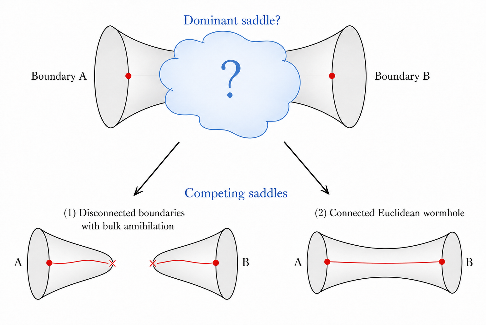
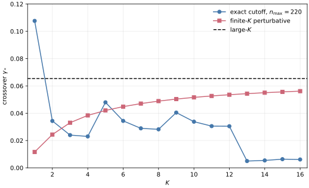
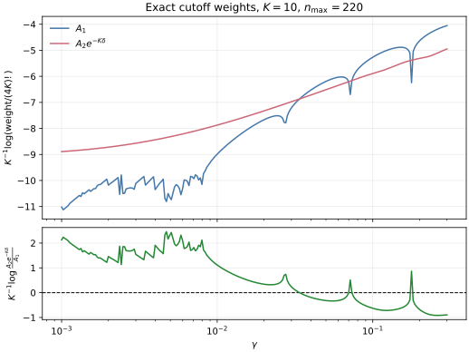
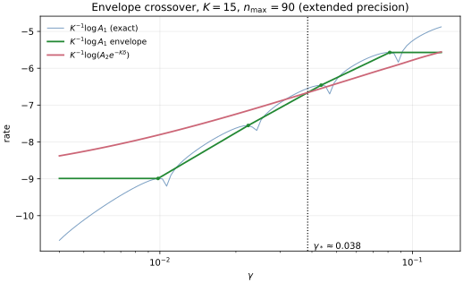
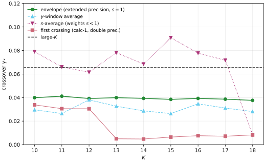

A Toy Model of Wormholes
Brian Swingle + Claude Code with Opus 4.8 + Codex with GPT 5.5
June 22, 2026
Confidence: Medium (as a toy model)
Reports from GPT 5.5 and Opus 4.8
Acknowledgements: I thank Martin Sasieta and Mark Van Raamsdonk for discussions.
In a paper with my collaborators Stefano Antonini and Martin Sasieta (AS^2), we discussed certain wormhole solutions in general relativity sourced by dust-shell matter. We argued these solutions could dominate the Euclidean path integral under the right conditions and that in this case one found interesting closed universe physics. Nevertheless, there is a general concern that there might be other saddle points that qualitatively change the story, and this possibility is usually hard to rule out.
One often appeals to other physical intuitions to argue for the correctness of a given saddle, even if one cannot rule out other possibilities with a completely general argument. However, because the physics of closed universes in holography is still a subject in flux, it’s worth thinking more about this issue of saddle points.
In recent work with my student Val, we gave evidence in a particular microscopic model, the Sachdev-Ye-Kitaev model, that such wormhole solutions do give a good account of the physics, but here I want to think through a toy model of the physics along the lines suggested in an appendix of AS^2.
Holographic motivation
In holography, one specifies some boundary conditions and then searches for a bulk ``filling in’’ of those boundary conditions according to a set of rules. For example, the bulk geometry must obey Einstein’s equations, or some generalization thereof. Often it is not clear what the filled in geometry should be, so one must consider various competing possibilities.
I want to consider a case in which the boundary consists of two disjoint pieces, each of which hosts a bunch of matter modelled as non-interacting dust. The bulk can then be either disconnected or connected, in which case it forms a kind of wormhole. Using red to denote the matter, the competition is illustrated in this sketch (made by GPT 5.5 based on my sketch):

If the Euclidean path integral is written schematically as Z = \int Dg\, e^{- I[g]}, then the most naive rule is to look for the solution with the smallest action I, since its contribution, e^{-I}, to Z is presumably the largest.
One often finds that the wormhole geometry costs more action, meaning the disconnected solution would dominate. This would render the closed universe physics associated with the wormhole solution somehow subleading to the dominant disconnected physics. That certainly may be the way it works in some cases.
However, a nice feature of the wormhole solution is that the red matter worldline can smoothly connect between the two boundaries, whereas in the disconnected case the matter must somehow self-annihilate within each disconnected space. Such a self-annihilation should generically be possible in quantum gravity, assuming the matter is essentially non-interacting dust, but perhaps this self-annihilation process is sufficiently suppressed that the two saddles have an interesting competition.
For example, suppose the dust consisted of a dilute gas of Hydrogen. There is no conservation law that forbids self-annihilation (Hydrogen is electrically neutral, baryon and lepton number are not exact symmetries, etc.), but the process is unlikely to occur. The boundary interpretation could be that on boundary A we are trying to create a lot of Hydrogen (e.g. applying many copies of a Hydrogen creation operator) and on boundary B we are trying to destroy a lot of Hydrogen (e.g. applying many copies of a Hydrogen annihilation operator). It is not impossible that the corresponding annihilation and creation of Hydrogen occur in the bulk of A and B, respectively, but it is unlikely. The question is whether this suppression from the matter sector can compete with the suppression arising from the wormhole’s larger action.
For a simple bulk model, we could take a scalar field \phi representing the dust and include a weak \phi^4 interaction that allows for self-annihilation or creation. For parameters, assuming Newton’s constant, G, is small (the usual large N limit), it’s interesting to consider an O(1/G) amount of matter (to generate backreaction and stabilize the wormhole) along with a weak O(G) \phi^4 coupling. Below I will consider an even simpler version of this as a first step to a more complete bulk analysis.
Oscillator model
I propose to model the competition using a simple quantum anharmonic oscillator. The Hamiltonian is H = \omega a^\dagger a + g( a+ a^\dagger)^4, and I’ll suppose that g is very small. a^\dagger and a are creation and annihilation operators that correspond to the matter particles described by the scalar field \phi, and the smallness of g translates to a weak \phi^4-type coupling in the bulk. Crucially, the quanta counted by a^\dagger a are not conserved by the Hamiltonian, but they may be approximately conserved owing to the weakness of the interaction. To capture the large N scaling, I’ll introduce a parameter K and assume that the number of quanta added is O(K) and g is O(1/K).
I’ll model the connected vs disconnected competition as a comparison between two quantities, A_1= |\langle 0 | e^{- s H} (a^\dagger)^{4K} | 0\rangle|^2 and A_2 = \langle 0| a^{4K} e^{- 2 s H} (a^\dagger)^{4K} | 0\rangle where a|0\rangle=0. |0\rangle is the ground state of H when g=0.
I think of (a^\dagger)^{4K} as creating the dust, which is specifically chosen to consist of a lot of approximately conserved quanta. By analogy with the holographic setting, the basic quantity is \langle 0 | a^{4K} (\mathrm{something}) (a^\dagger)^{4K} | 0\rangle where (\mathrm{something}) stands for the unknown ``filling in’’ of different bulk options in the gravitational path integral. In other words, I consider different choices of (\mathrm{something}) and look to determine which option is larger.
From this perspective, A_1 amounts to the replacement (\mathrm{something}) \to e^{-s H} |0\rangle \langle 0 | e^{- sH}, which is analogous to the disconnected saddle. By contrast, A_2 arises from the replacement (\mathrm{something}) \to e^{-2 s H} , which is analogous to the connected bulk saddle in which the particles can join with their partners at the other end of the wormhole. I will also include an additional factor in A_2 to model the different action costs of the disconnected and wormhole saddles (the part not directly associated with the matter).
So the final comparison is between A_1 and A_2 e^{-\Delta I} where \Delta I is an additional free parameter of the model. I will assume \Delta I is also O(K). An application of Cauchy-Schwarz shows that A_1 \leq A_2, so if \Delta I>0, there is the possibility of an interesting competition between the two terms. For the large K comparison, define \delta and \gamma by \Delta I = K \delta and g = \gamma/K.
Perturbative calculation
The calculations of A_1 and A_2 are straightforward to leading order in perturbation theory. The basic point in the case of A_1 is that one needs at least K factors of the quartic interaction to get a non-zero result, so A_1=0 when s=0 (or \gamma=0). By contrast, A_2=(4K)! when s=0. In the opposite limit, s\to \infty, the results instead are A_1 \to e^{-2 s E_{\mathrm{gs}}} |\langle 0 | \mathrm{gs} \rangle \langle \mathrm{gs} | (a^\dagger)^{4K} |0\rangle|^2 and A_2 \to e^{- 2 s E_{\mathrm{gs}}} |\langle \mathrm{gs} | (a^\dagger)^{4K} |0\rangle|^2 where |\mathrm{gs}\rangle is the ground state of H. In this limit, A_1 and A_2 differ only by a factor of |\langle \mathrm{gs} | 0 \rangle|^2, which will be close to unity at large K since g=\gamma/K is small. Thus for \delta>0 and sufficiently large s, I expect a phase transition in which A_1 and A_2 e^{-\Delta I} exchange dominance as \gamma is increased.
Here is the detailed calculation. Let n=4K,\qquad I(s)=\int_0^s d\tau\, e^{-4\omega \tau} =\frac{1-e^{-4\omega s}}{4\omega}. In the interaction picture, V_I(\tau)=\left(a e^{-\omega \tau}+a^\dagger e^{\omega \tau}\right)^4. For B(s)=\langle 0|e^{-sH}(a^\dagger)^n|0\rangle, the first non-zero contribution comes from K insertions of the term that lowers the particle number by four. Thus B(s)=\frac{(-g)^K}{K!}I(s)^K \langle 0|a^{4K}(a^\dagger)^{4K}|0\rangle+O(g^{K+1}), and hence A_1(s)=\left[\frac{(4K)!}{K!}\right]^2 \left[g I(s)\right]^{2K}+O(g^{2K+1}).
For A_2, write |\psi(s)\rangle=e^{-sH}(a^\dagger)^n|0\rangle,\qquad A_2(s)=\langle \psi(s)|\psi(s)\rangle. Keeping the leading process in each Fock-number sector, the component with n-4j particles is c_j(s)=\langle n-4j|\psi(s)\rangle =(-1)^j\frac{n!}{j!\sqrt{(n-4j)!}}\, e^{-s\omega(n-4j)} \left[gI(s)\right]^j+O(g^{j+1}). This gives the approximation A_2(s)\simeq \sum_{j=0}^K \frac{(n!)^2}{(n-4j)!(j!)^2} e^{-2s\omega(n-4j)} \left[gI(s)\right]^{2j}. This is not meant as the fixed-order leading expansion of A_2, which would only keep the j=0 term. Instead, it keeps the leading process in each sector with a different final particle number.
The final term, j=K, is precisely the leading expression for A_1. Therefore \frac{A_2(s)}{A_1(s)}\simeq \sum_{\ell=0}^K \frac{1}{(4\ell)!} \left[\frac{K!}{(K-\ell)!}\right]^2 y(s)^{2\ell}, where y(s)=\frac{e^{-4\omega s}}{gI(s)} =\frac{4\omega e^{-4\omega s}}{g(1-e^{-4\omega s})}.
Now set g=\gamma/K and \Delta I=K\delta. Then y(s)=Kc(s),\qquad c(s)=\frac{4\omega e^{-4\omega s}} {\gamma(1-e^{-4\omega s})}. At large K, the ratio has the form \frac{A_2(s)}{A_1(s)}\sim \exp\left[K f(c(s))\right], where f(c)=\max_{0\leq \rho\leq 1}\Phi(\rho;c) with \Phi(\rho;c)= -2(1-\rho)\log(1-\rho)+2\rho+2\rho\log c -4\rho\log(4\rho). The saddle obeys c(1-\rho)=16\rho^2. At this saddle the rate function simplifies to f(c)=2\rho_*(c)-2\log(1-\rho_*(c)).
The weighted comparison is therefore controlled by \frac{A_2(s)e^{-K\delta}}{A_1(s)} \sim \exp\left[K(f(c(s))-\delta)\right]. Thus the large K transition occurs when f(c_*)=\delta. Equivalently, if q=1-\rho_*, then \frac{\delta}{2}=1-q-\log q,\qquad c_*=\frac{16(1-q)^2}{q}. For fixed \gamma and \delta, the transition time is s_*=\frac{1}{4\omega}\log\left(1+\frac{4\omega}{\gamma c_*}\right). Equivalently, at fixed s the critical interaction strength is \gamma_*=\frac{4\omega e^{-4\omega s}} {c_*(1-e^{-4\omega s})}.
The conclusion is that there is a non-zero \gamma_* such that for \gamma<\gamma_*, the connected answer wins despite the extra action cost, while for \gamma>\gamma_*, the disconnected answer wins because the weak self-annihilation process is no longer sufficiently suppressed. For small \delta, one has c_*\simeq \delta^2, which makes explicit that even a small action cost can lead to a sharp large-K competition.
Agent note: Codex (GPT-5) added the perturbative calculation and large-K comparison in this section on June 22, 2026.
Numerical calculation
As an example, consider the case \omega=1, s=1, and \delta=1. At large K, the perturbative prediction then yields a crossover at q_*=0.7662486082,\qquad c_*=1.140929199, and hence \gamma_*^{(\infty)}=0.06541110658.
I can also compare this to numerics at finite K. For K=1,2,3,\cdots, the exact answer can
be computed by imposing a cutoff n_{\max} on the number of quanta and
making sure the answer is converged as a function of n_{\max}. Since the Hamiltonian
preserves parity, I restricted to the even Fock sector. The
numerical calculation is in calculation-1; it
diagonalizes the cutoff Hamiltonian and finds the first crossing
of \frac{A_2
e^{-K\delta}}{A_1} as \gamma is increased. For comparison,
I also show the finite-K
crossing predicted by the perturbative sum above. Using n_{\max}=220, I find
\begin{array}{c|ccc}
K & \gamma_*^{\rm exact, first} &
\gamma_*^{\rm pert} & \gamma_*^{(\infty)} \\
\hline
1 & 0.10765449 & 0.01162137 & 0.06541111\\
2 & 0.03435154 & 0.02437472 & 0.06541111\\
3 & 0.02397843 & 0.03305853 & 0.06541111\\
4 & 0.02301296 & 0.03840007 & 0.06541111\\
5 & 0.04798293 & 0.04203323 & 0.06541111\\
6 & 0.03439949 & 0.04482553 & 0.06541111\\
7 & 0.02892992 & 0.04706499 & 0.06541111\\
8 & 0.02821508 & 0.04887944 & 0.06541111\\
9 & 0.04047296 & 0.05036770 & 0.06541111\\
10 & 0.03380631 & 0.05160906 & 0.06541111\\
11 & 0.03055754 & 0.05266126 & 0.06541111\\
12 & 0.03048058 & 0.05356492 & 0.06541111\\
13 & 0.00496243 & 0.05434938 & 0.06541111\\
14 & 0.00541595 & 0.05503664 & 0.06541111\\
15 & 0.00633907 & 0.05564363 & 0.06541111\\
16 & 0.00611356 & 0.05618363 & 0.06541111\\
\end{array}
The finite-K
perturbative estimate moves steadily toward the large-K prediction as K grows, as expected. The exact
cutoff crossings show a more complicated story. For small K, they give a direct
full-Hamiltonian check of the same competition, but by larger
K the first crossing is
strongly affected by zeros or near-zeros of the transition
amplitude in A_1. Thus the
exact first-crossing column should not be read as a clean
approach to the large-K
perturbative saddle. Rather, it is a useful warning that the
full oscillator has additional finite-K structure, including the
number-conserving pieces of (a+a^\dagger)^4 that are not resummed
in the simple leading perturbative estimate.

For a more direct view of the competition, here are the two common-factor-stripped weights for K=10 as functions of \gamma. The plotted quantities are K^{-1}\log(A_1/(4K)!) and K^{-1}\log(A_2e^{-K\delta}/(4K)!).

The cutoff dependence of the exact first crossing is shown
separately in
calculation-1/figures/cutoff_convergence.svg.
Agent note: Codex (GPT-5) implemented
calculation-1 and added the finite-K numerical comparison in this
section on June 22, 2026; Codex later upgraded the calculation
to use NumPy/SciPy and extended the scan to K=16.
Refined numerical study
The first numerical calculation uncovered some subtleties
worth a closer look. The exact first crossing of the previous
section is apparently not a very clean observable at larger
K, for two distinct reasons
that I disentangle in calculation-2.
First, the disconnected amplitude B(\gamma)=\langle 0|e^{-sH}(a^\dagger)^{4K}|0\rangle, whose square is A_1, is not sign-definite. Beyond its leading small-\gamma behavior B\sim(-\gamma)^K, competing multi-step processes cancel and B develops honest zeros at a discrete set of finite \gamma (I confirmed this at 60-digit precision). At such a zero A_1\to 0 and \log(A_2 e^{-K\delta}/A_1)\to+\infty, so the first crossing as \gamma increases is set by the location of the nearest zero rather than by the smooth competition of the two weights.
Second, and more insidiously, a double-precision diagonalization cannot reach the crossover region at all once K\gtrsim 12. There |B| falls below \sim 10^{-21}, and the value returned for B is then floating-point round-off: it reproduces across cutoffs n_{\max} (the same banded round-off each time) yet is wrong in magnitude and even in sign. This is the real reason the exact first crossings above fail to settle as n_{\max} is increased — the obstruction is the precision floor, not the Hilbert-space truncation.
Both problems are cured in calculation-2. I
recompute A_1 and A_2 at s=1 in extended precision (40 digits), and I replace the fragile
first crossing with a crossover read off from the smooth
envelope of A_1. Writing B=E(\gamma)\times(\mathrm{oscillation}),
the local maxima of |B| between
consecutive zeros trace the smooth envelope E; interpolating \log A_1 through these peaks and
intersecting it with the smooth weight \log(A_2 e^{-K\delta}) yields a
single, zero-insensitive crossover \gamma_*(K). The construction is
shown for K=15 here:

The resulting crossover shows no downward drift with K, in contrast to the first-crossing column. Cutoff-convergence spot checks leave it unchanged to the digits shown as n_{\max} is varied (at K=14 over n_{\max}=80,120,160, and at K=16,18 up to n_{\max}=140); the limiting uncertainty is instead the grid resolution of the envelope construction, which fixes \gamma_* only to about two significant figures (of order 1\%). Using n_{\max}=90: \begin{array}{c|cc} K & \gamma_*^{\rm env} & \gamma_*^{(\infty)} \\ \hline 10 & 0.0399 & 0.0654\\ 11 & 0.0412 & 0.0654\\ 12 & 0.0392 & 0.0654\\ 13 & 0.0399 & 0.0654\\ 14 & 0.0393 & 0.0654\\ 15 & 0.0385 & 0.0654\\ 16 & 0.0393 & 0.0654\\ 17 & 0.0386 & 0.0654\\ 18 & 0.0376 & 0.0654\\ \end{array} Across K=10 through 18 the crossover sits on a flat, nonzero plateau, \gamma_*\simeq 0.038–0.041. This lies about 40\% below the large-K perturbative value \gamma_*^{(\infty)}=0.0654 — a genuine finite-K suppression — but it is plainly approaching a nonzero limit rather than collapsing to zero. Two further smoothings, a running average of A_1 in \gamma and an average over the evolution parameter s, give the same qualitative picture of a stable nonzero crossover (the s-average samples s<1, since the weights grow as s decreases, so it only corroborates the trend, and its double-precision implementation itself breaks down at the largest K, with the K=18 point falling into the collapsed band rather than the plateau). The comparison of all the diagnostics, including the misleading first-crossing column, is collected here:

The absolute crossover value retains a method dependence at the \sim30\% level (the envelope gives \simeq 0.039, the \gamma-window average \simeq 0.030), which reflects a genuine ambiguity in pinning the crossing of an oscillating finite-K amplitude. The robust, method-independent statement is the existence of a nonzero plateau with no downward drift.
Agent note: Claude (Opus 4.8) implemented
calculation-2 and added this section on June 22,
2026, after the precision and zero-structure issues were
identified in
reports/report-2026-06-22-claude-opus-4-8.md.
Earlier sections and calculation-1 were left
unchanged. The precision claims and table digits here were
subsequently tightened the same day, following the Codex (GPT-5)
report (reports/report-2026-06-22-codex-gpt5.md)
and a grid-resolution check.
Outlook
I think the summary is overall positive for this toy model. The perturbative calculation gives a clean answer in the large K limit, while the finite K numerics exhibit more structure. In particular, there are subtleties to do with precision and zeros in A_1. However, some refined numerics gave a result that is largely stable as K is increased. The perturbative large K value of \gamma_* is not quantitatively accurate, but the finite K result is of the same order of magnitude. Although this issue could benefit from further scrutiny (and one attempt is recorded in calculation-3), the crossover between the two competing terms appears robust. Thus, at least in this toy model, there is good evidence that the connected wormhole saddle can dominate at sufficiently weak coupling, i.e. when the self-annihilation/creation processes are sufficiently suppressed.